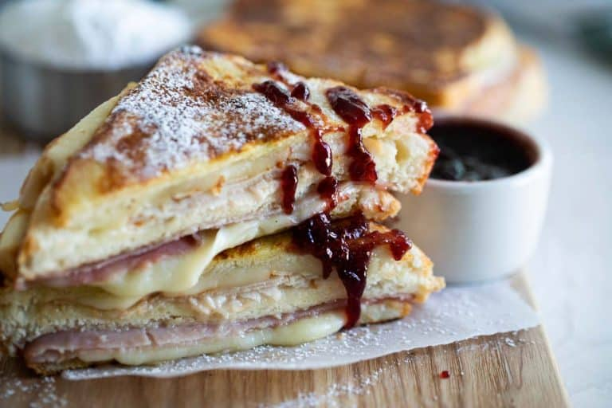

Monte Cristo

Description
This is the ultimate make at home Monte Cristo Sandwich - with turkey, ham and cheese in a
sandwich that is cooked French toast style. If desired, serve with powdered sugar and
raspberry jam. It's a sweet and savory combo that will convert even a skeptic!
Ingredients
- White bread
- Ham
- Turkey
- Provolone cheese
- Milk
- Eggs
- Butter
Steps
- Whisk the eggs and milk in a shallow pan.
- Melt the butter in a large skillet.
-
Make the sandwiches by layering a slice of bread, cheese, ham, another slice of bread spread
with mayonnaise, turkey, cheese, and then another slice of bread. Press it down to make sure
it all sticks together.
- Dip each sandwich in the milk and egg mixture, then transfer to the hot skillet.
- Cook until the sandwich is toasted on both sides and the cheese is melted.
- Serve dusted with powdered sugar and with raspberry jam on the side.
Back